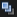
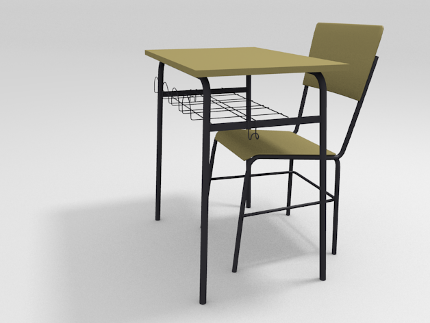
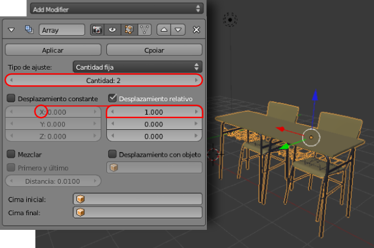
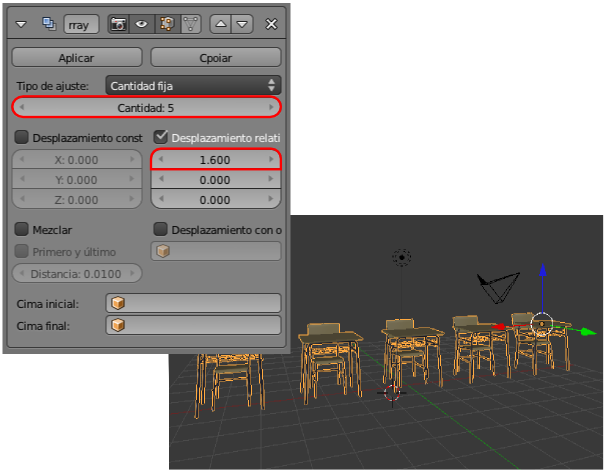
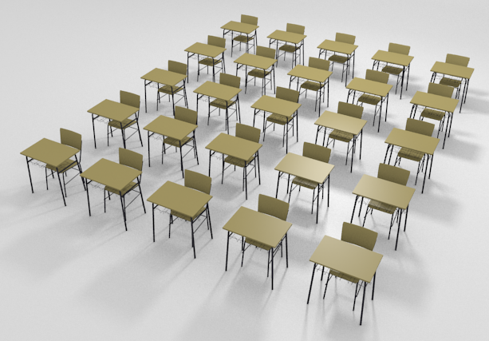
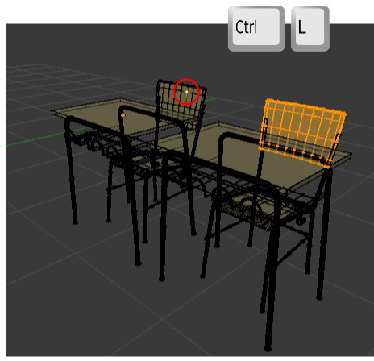
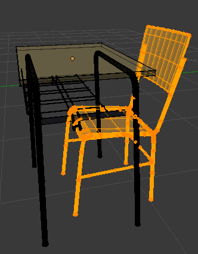
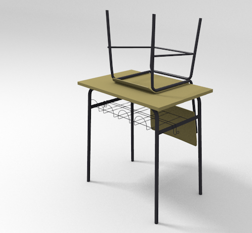

Serie
Una modalidad más en el ámbito de los objetos clonados la encontramos en el modificador Selección o Matriz  (a partir de ahora Serie) cuyas posibilidades son verdaderamente infinitas.
Un asunto de traducción
Desde el comienzo de la traducción al español a este modificador se le ha llamado Serie (una opción acertada para Array) pero la llegada de Blender 2.62 traía lo que consideramos un error de traducción y a este modificador lo llama Selección (en Linux) o Matriz (el Windows). Es por eso que usaremos Serie para referirnos a este modificador.
Supongamos el modelado de la mesa escolar que vimos en el apartado anterior. El problema que plantea para la aplicación del modificador Serie es que en realidad no se trata de un objeto sino de varios; asi que antes de nada le aplicamos las siguientes ediciones:
- A todos los objetos que tienen asignados modificadores se los aplicamos con el botón correspondiente (recordamos que esto hay que hacerlo desde Modo Objeto
 ).
).
- Seleccionamos todos los objetos que conforman la malla y hacemos Objeto/Unir (o "Control_J"). Con esto se consigue que todos formen parte de una sola malla.
Nosotros para la demostración vamos a contar con un añadido extra: la silla. Por supuesto, todos los objetos de la silla han sido unidos (Objeto/Unir) con los de la mesa para que todo el conjunto sea un único objeto.
Puede que el objeto final tenga una malla muy densa (high-poly o alta poligonización) y haga que el modificador se comporte de una manera pastosa. Lo ideal sería disponer de un modelado menos denso (low-poly o baja poligonización). En cualquier caso nos vale para la práctica.
Seleccionamos el objeto en cuestión y le aplicamos el modificador Serie. El objeto se duplica.
¿Qué ha pasado? Un análisis de las opciones que están influyendo nos dice:
- La serie consta de dos objetos tal y como marca el parámetro Cantidad.
- La serie se desplaza a lo largo del eje X.
- La separación entre los objetos (entre sus orígenes en realidad) es de 1 unidad relativa (Desplazamiento relativo en X es 1.000). Es decir, que el ancho del objeto es lo que Blender toma como unidad.
Aumentamos Cantidad a 5 y Desplazamiento relativo en X a 1.600.
Para añadir mesas en el eje Y debemos aplicar un nuevo modificador Serie:
- Cantidad: 5. Para tener 25 mesas.
- Desplazamiento relativo de X en 0.000. No queremos desplazamientos en X de los duplicados.
- Desplazamiento relativo de Y a 2.

Separa las mallas
Ya le hemos dado el visto bueno a la composición y hemos pulsado Aplicar en los dos modificadores Serie asignados al objeto mesa_silla .
Lo mejor es seleccionar todos los vértices que conforman la silla para separarla con una sola edición. A los métodos que ya conocemos de selección le vamos a añadir uno nuevo. Como estamos estudiando asuntos relativos a elementos vinculados vamos a decirle a Blender que cuando tengamos un vértice seleccionado de uno de los elementos que conforman la silla, seleccione automáticamente todos los que están conectados con él. El camino corto es el atajo de teclado "Control_L".
Seleccionamos un vértice de otro de los elementos (con "Shift" pulsado para acumular) y repetimos la operación hasta completar la selección de toda la silla.

De esta manera cuando hagamos Malla/Vértices/Separar, optaremos por Selección; la silla se independizará y podremos seleccionarla desde Modo Objeto  ...
...
...para transformarla a nuestro gusto.
